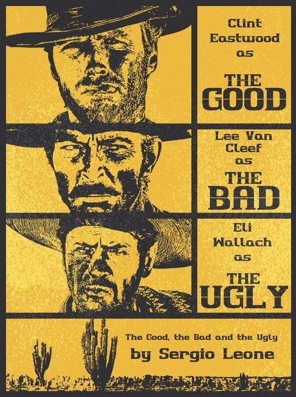
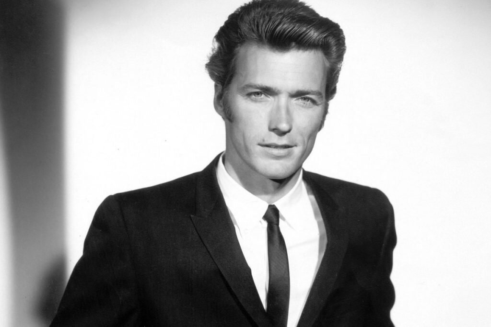
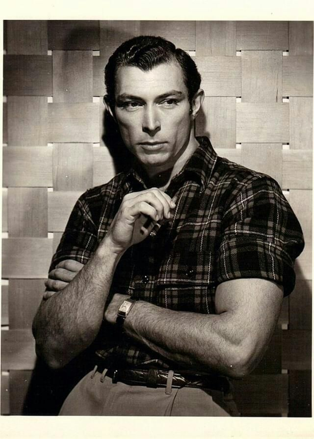
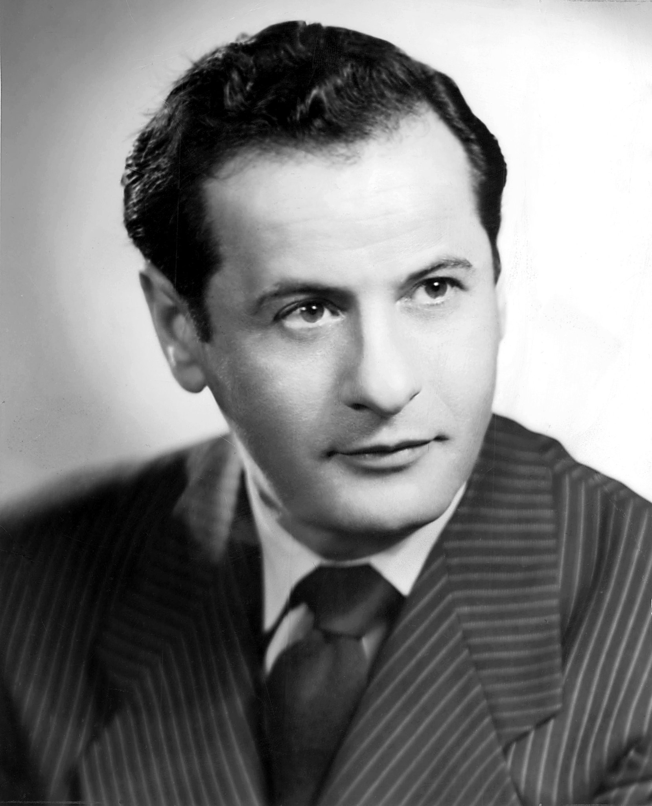
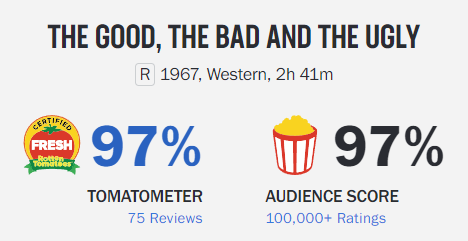
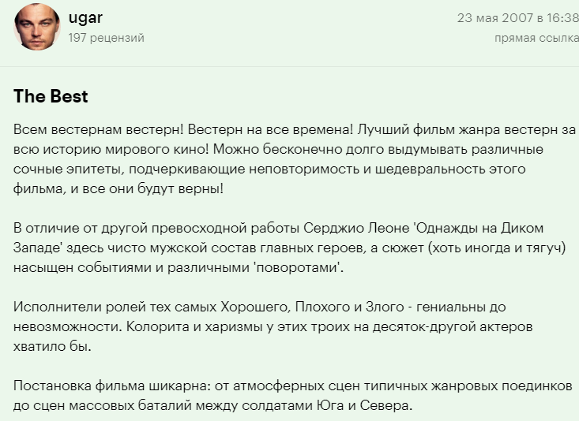
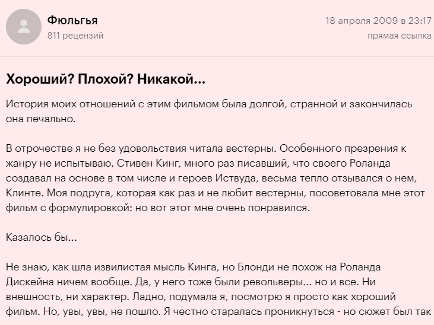

О фильме

Хороший, плохой, злой
Разгар Гражданской войны, Дикий Запад. По воле судьбы трое мужчин вынуждены объединить усилия в поисках украденного золота. Но совместная работа — не самое подходящее занятие для таких отъявленных бандитов. Компаньоны вскоре понимают, что в их дерзком и опасном путешествии по разоренной войной стране самое важное — никому не доверять и держать пистолет наготове.
Актёрский состав
- 
Клинт Иствуд
- 
Ли Ван Клиф
- 
Илай Уоллак
Информация о фильме
| Год выпуска | 1966 |
| Страна | Италия, Испания, Германия (ФРГ) |
| Режиссер | Серджио Леоне |
| Сценарий | Адженоре Инкроччи, Фурио Скарпелли, Лучиано Винчензони |
| Премьера в мире | 23 декабря 1966 |
Рейтинг и отзывы


